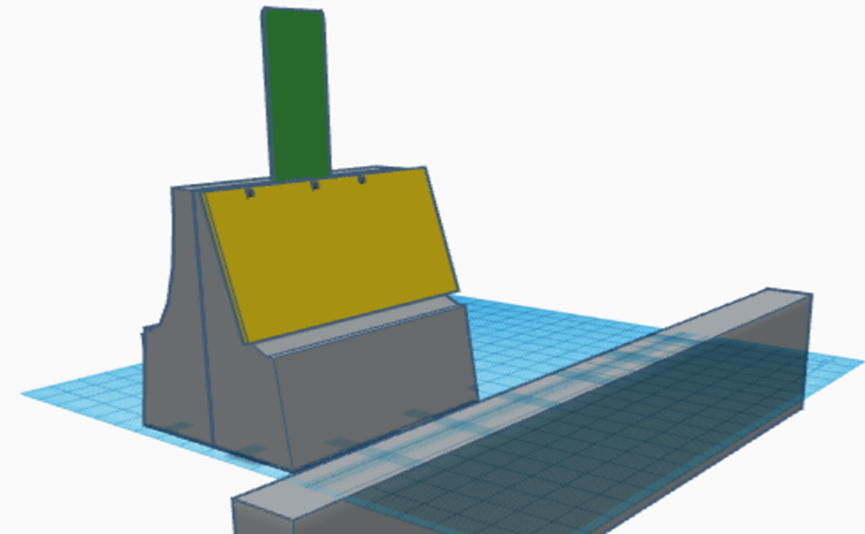
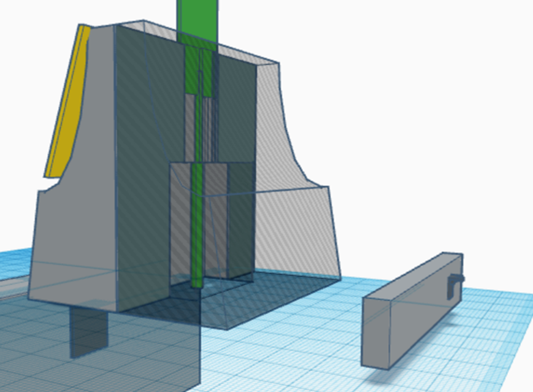
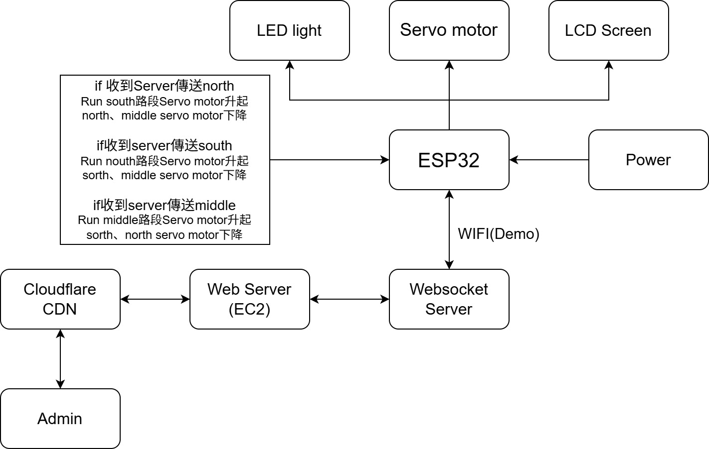
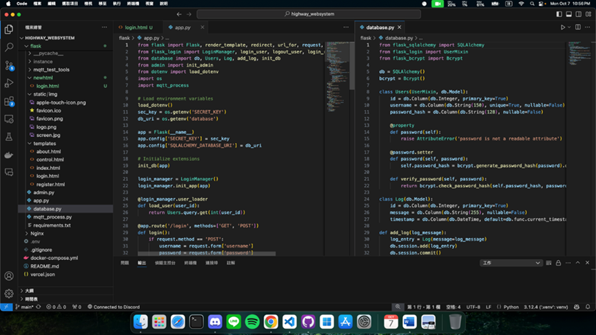

升降式道路分隔島 - 專題報告
壹、摘要
自古以來國道塞車都是一個大問題，不管事國定假日還是普通假日這些都是常態，為了解決此問題，我們需要有個方法可以去改善這狀況，因此我們發現了調撥車道的這個方法，透過調撥車道，可以把容易塞車段道路多出一道可行駛道路，因此增加汽車流動率來減少塞車機率。以往的調撥車道大多都在平面道路，因為目前的調撥車道都是透過人工完成，但高速公路的平均車速普遍都偏快，若還是要透過人工方式改變車道勢必會有安全性問題，因此我們設計出了此產品。
貳、研究動機與目的
由於台灣地小人多，導致上下班時間與假日會有塞車的問題，很常聽到諸多同學抱怨此問題，孩子都在抱怨了長輩們肯定也會有不少怨氣，且此問題在連假時會更嚴重、更危險。連假時，大家都會想回老家看看或是出去玩，此問題使駕車時間不斷拉長，會堆積駕駛的疲勞值，使其有睏意、注意力不集中等問題。
因此，我們希望運用這次機會改變這個現象。我們將分隔島埋入公路與其合二為一，以軟體觀察車流，並使用公路原有的螢幕顯示調撥訊息，遠程操控分隔島將其伸出，達到調撥車道的效果。
參、研究設備及器材
| 名稱 | 規格 | 數量 | 備註 |
|---|---|---|---|
| ESP32 | - | 1 | 使用晶片 |
| 伺服馬達 | DS3115 | 15 | 使分隔島伸縮 |
| 銲槍 | - | 1 | - |
| 尖嘴鉗 | - | 1 | - |
| 智慧裝置 | Laptop | 1 | 使用網頁 |
| 電路板 | 10x20 | 1 | - |
| 木板 | 40x50、20x50、40x20 | 2片、2片、2片 | 成品外殼 |
肆、研究過程或方法
此專題須將硬體與軟體結合才能完成，運用軟體調用當前高速公路車況，並決定是否需要調撥車道，再將分隔島伸起，達到調撥車道的效果。
圖一:原始分隔島
圖二:改良後的分隔島
圖三:分隔島頗面圖
圖四:硬體方塊圖
圖五:網頁程式碼
陸、討論
一開始我們是打算使用可以自行移動的分隔島，但經過討論後發現，此方法只會增加麻煩並不會幫助調撥。考量到此因素，我們才更改使用方式，以伸縮作為主要模式，減少危險發生並幫助社會。
柒、結論
- 增加車道使用頻率，達到減少車流壓力造成的危害。
- 減少行車時間，降低駕駛疲勞。
- 智慧化調撥車道，減少行政人力支出，加快調撥速度，降低危險。
- 提高道路使用率，降低塞車時間，提高汽車燃油效率，減少污染。